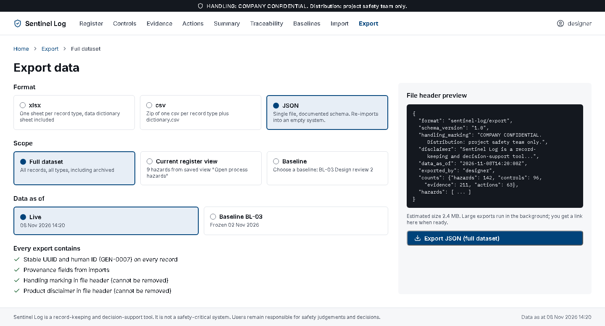

UC-16: Export and round trip. Actor: Admin
Main flow
- administrator opens the export page; the page offers xlsx, csv, and JSON formats over full, saved-view, and baseline scopes (req-34).
- administrator exports JSON; the download filename matches the export stamp pattern and the document parses as a sentinel-log export (req-34).
- administrator exports xlsx; the download filename matches the export stamp pattern (req-60).
- administrator posts the JSON to the restore path; the shared dev register is non-empty so the product refuses with the empty-system message and writes nothing, and the register count stays unchanged (req-35).
- administrator opens the Meridian register after the refused restore; the count line still lists at least the seeded hazards with archived excluded, proving nothing was written (req-35). The document-level round trip (wipe then restore_document) is verified by the named Django test test_round_trip_documents_match_except_header, not in the browser, because restoring would wipe the protected FWP-01 seed (req-35).
- every export and the restore report carry the configured handling marking (req-117).
Stills
